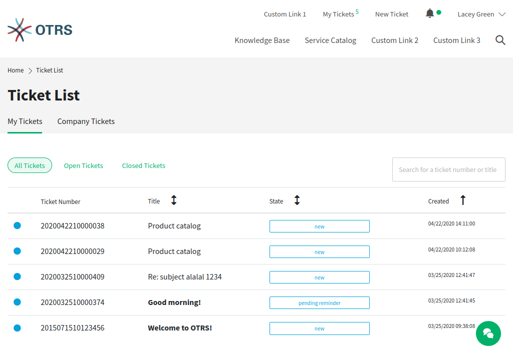
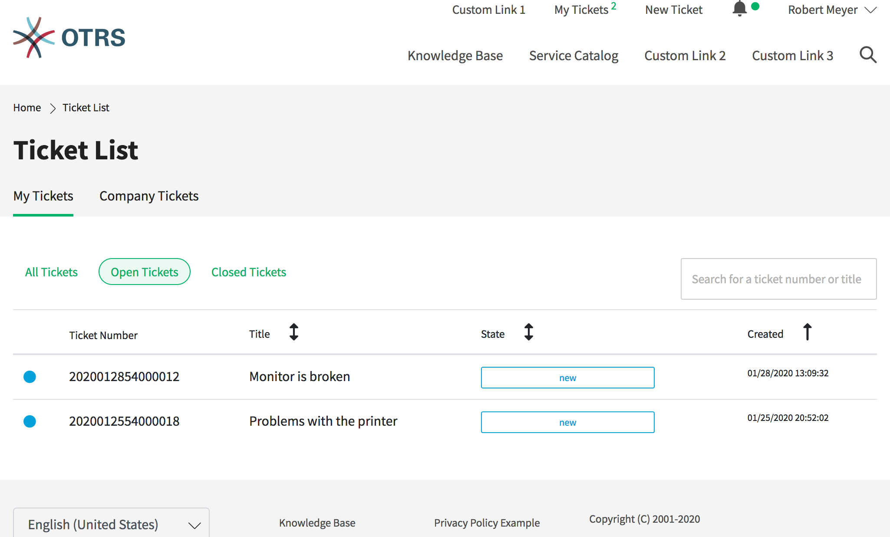
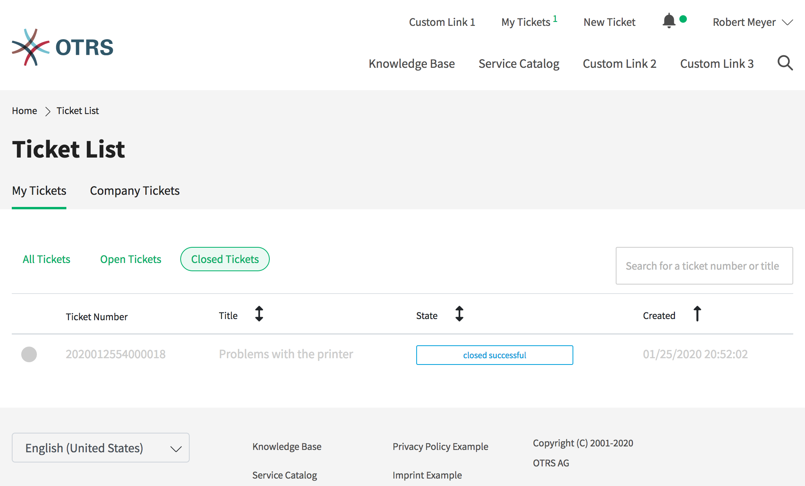

Ticket List¶
The Ticket List displays the tickets of the logged in customer user and the company tickets. The Search field in this section enables the customer user to search for certain tickets by ticket title or ticket number.
Tickets with bolded texts are have unread articles. The colored circles in the first column have the following meaning:
- Blue circle = Open tickets with read or unread articles.
- Grey circle = Closed tickets.
Note
The shown columns of the ticket list can be defined in the administrator interface. It is possible to define if the title of the ticket should be shown or the last subject. It is possible to add additional rows like Owner, Queue or Dynamic Fields.
My Tickets¶
The views in this section show tickets that have been created by the current logged in customer user.
- All Tickets
This view shows all tickets of the currently logged in customer user.
My Tickets - All Tickets
- Open Tickets
This view shows all tickets of the currently logged in customer user that are in Open status.
My Tickets - Open Tickets
- Closed Tickets
This view shows all tickets of the currently logged in customer user that are in Closed status.
My Tickets - Closed Tickets
Company Tickets¶
The views in this section show all tickets assigned to a certain customer. All customer users assigned to this certain customer can see the content in this list.